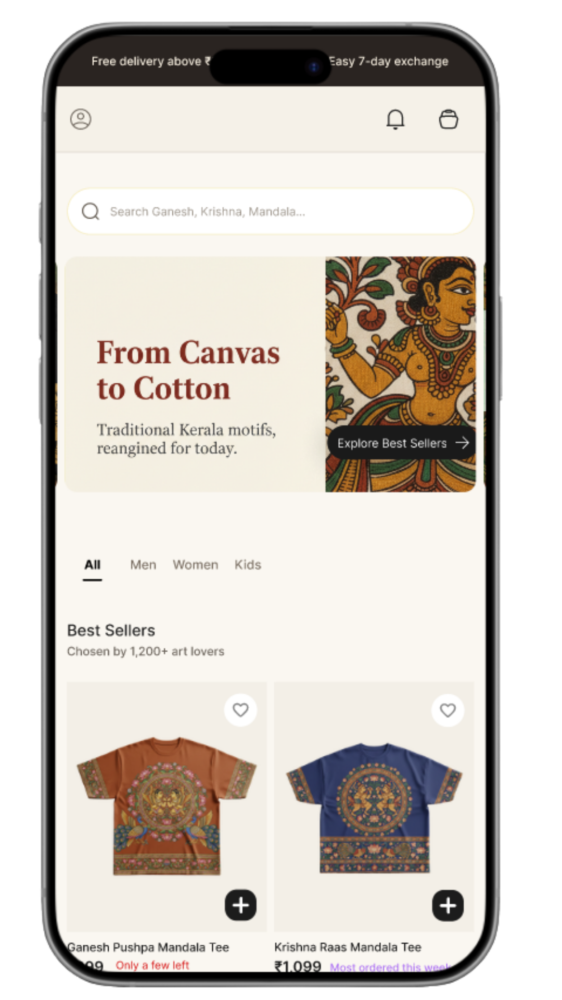
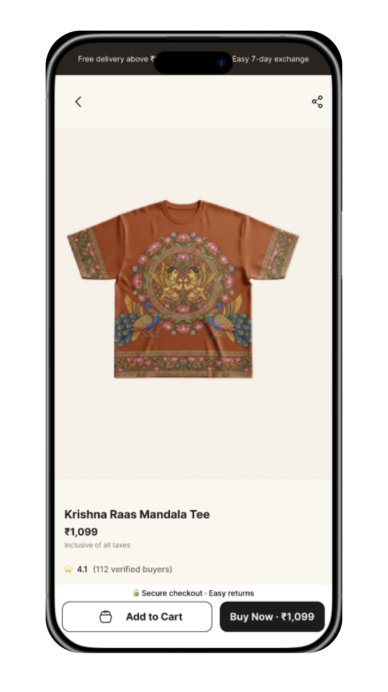
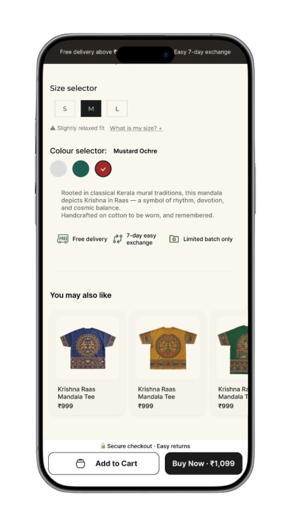
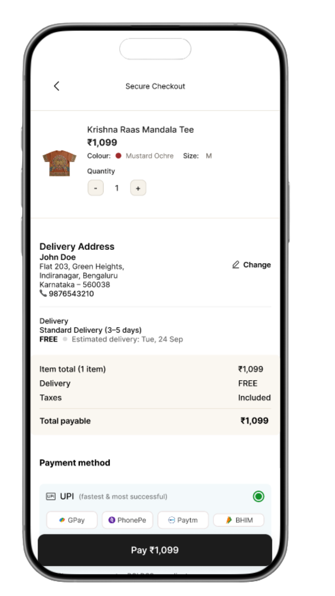
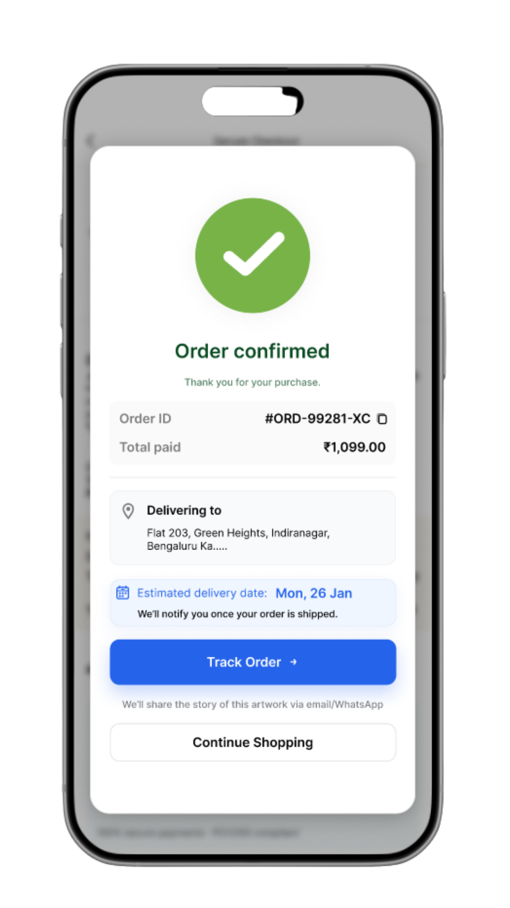
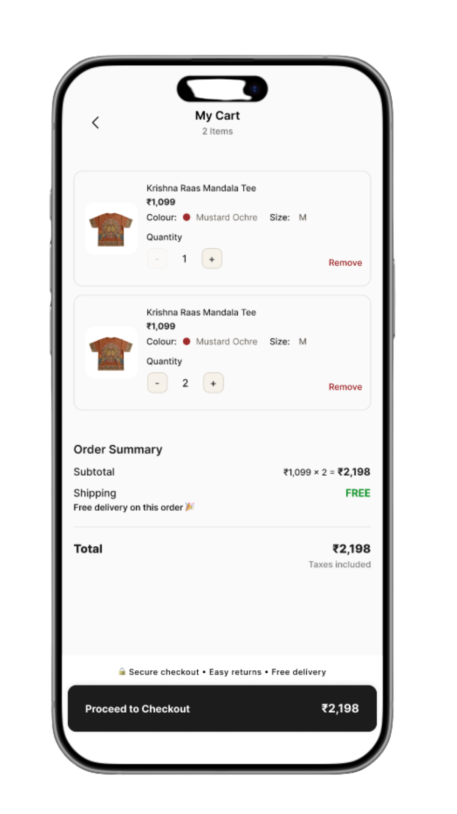
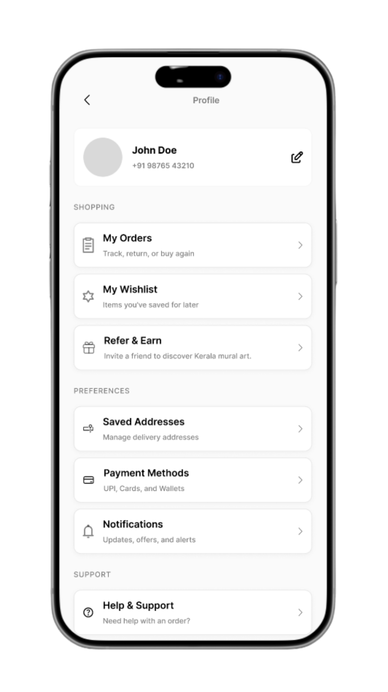

Blending cultural storytelling with modern shopping flows to increase emotional engagement and purchase intent for a handcrafted fashion brand.
Kerala Murals sells handcrafted clothing rooted in Indian textile traditions. The challenge was that their products carry deep cultural meaning � but their ecommerce experience treated them like any other fashion item. The design needed to bridge that gap.
Handcrafted products carry meaning that mass-produced items do not. When that meaning is absent from the shopping experience, the product becomes just another item competing on price. Kerala Murals needed a design that made the story inseparable from the product.







"Add to Cart" � transactional, cold, no connection to the product's meaning or the brand's values.
"Bring this home" � warm, intentional, and consistent with the idea that buying handcraft is a meaningful act, not just a transaction.